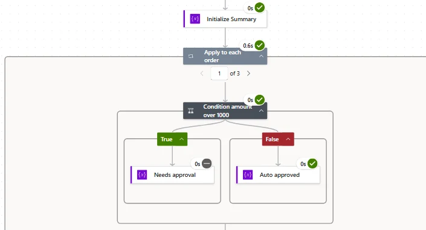
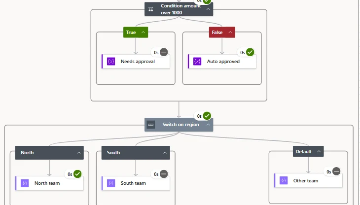
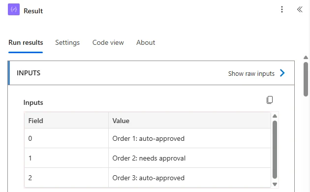

- Power Automate
- Level 1 · Foundations · 6 of 7
Conditions, Switch and loops
Real processes branch. An order over a limit needs approval; each region has its own team. Power Automate gives you three building blocks for this: Condition for a yes/no question, Switch for one value with several possible answers, and Apply to each to repeat the decision for every item in a list.
The sample data
[
{ "id": 1, "amount": 250, "region": "North" },
{ "id": 2, "amount": 1200, "region": "South" },
{ "id": 3, "amount": 80, "region": "East" }
]For each order the flow asks two questions: is the amount over 1,000 (needs approval), and which team handles the region?
Condition: two branches

Inside the loop, the condition compares items('Apply_to_each_order')?['amount'] with 1000 using is greater than.
Switch: one value, many cases

Switch only matches exact values (text or numbers). For ranges like over 1,000, use a Condition.
The result

concat('Order ', string(items('Apply_to_each_order')?['id']), ': needs approval')| Piece | What it does |
|---|---|
items('Apply_to_each_order') | The order the loop is currently processing. |
?['id'] | Its id: 1, 2 or 3. |
string(...) | Turns the number into text for joining. |
concat(...) | Builds the line, for example Order 2: needs approval. |
New to this? Start from the basics optional
Branch: a path the flow can take. Only one branch of a Condition runs per decision.
Iteration: one pass of a loop. In the run view the counter (1 of 3) lets you inspect each pass separately.
Default case: the Switch branch that runs when no case matches. Always use it, even just to log an unexpected value.
Build it step by step optional
- Create an instant flow named Conditions and loops.
- Initialize an Array variable Orders with the sample data above, and an empty Array variable Summary (
[]). - Add Apply to each named Apply to each order over
variables('Orders'). - Inside it, add a Condition: left
items('Apply_to_each_order')?['amount'], operator is greater than, right1000. - In True, add Append to array variable (Summary) with the needs-approval concat; in False, the same with auto-approved.
- Below the Condition, still inside the loop, add a Switch on
items('Apply_to_each_order')?['region']with cases North and South, each with a Compose naming the team. Put Central team handles other regions in Default. - After the loop, add a Compose Result with
variables('Summary'). - Test, then step through iterations 1, 2 and 3 to see different branches light up.
Common mistakes
- Comparing text with a number: if amount arrives as text,
'250' > 1000does not behave as expected. Wrap it inint(). - Switch case values are case-sensitive: north does not match North. Normalise with
toLower()if the source is inconsistent. - Loops inside loops multiply quickly: 500 × 500 is 250,000 actions. Filter first with Filter array.